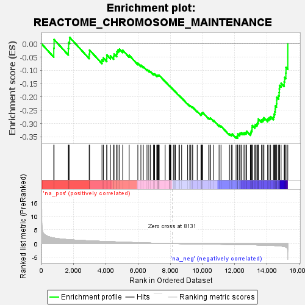
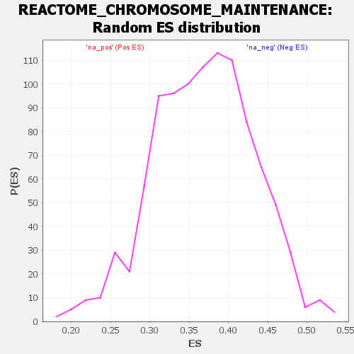

| Dataset | DGErankName |
| Phenotype | NoPhenotypeAvailable |
| Upregulated in class | na_neg |
| GeneSet | REACTOME_CHROMOSOME_MAINTENANCE |
| Enrichment Score (ES) | -0.3553313 |
| Normalized Enrichment Score (NES) | NaN |
| Nominal p-value | NaN |
| FDR q-value | 1.0 |
| FWER p-Value | 0.0 |

| SYMBOL | RANK IN GENE LIST | RANK METRIC SCORE | RUNNING ES | CORE ENRICHMENT | |
|---|---|---|---|---|---|
| 1 | H2BC21 | 764 | 2.056 | -0.0165 | No |
| 2 | RBBP7 | 782 | 2.034 | 0.0158 | No |
| 3 | ATRX | 1667 | 1.467 | -0.0183 | No |
| 4 | H2AJ | 1684 | 1.460 | 0.0047 | No |
| 5 | PPP6R3 | 1750 | 1.429 | 0.0239 | No |
| 6 | H3-3A | 2962 | 1.023 | -0.0390 | No |
| 7 | TERF2IP | 2986 | 1.017 | -0.0238 | No |
| 8 | H2AC8 | 3757 | 0.828 | -0.0609 | No |
| 9 | WRN | 3842 | 0.811 | -0.0531 | No |
| 10 | POLR2B | 4054 | 0.761 | -0.0545 | No |
| 11 | RPA1 | 4058 | 0.760 | -0.0422 | No |
| 12 | DKC1 | 4283 | 0.708 | -0.0453 | No |
| 13 | PRIM1 | 4478 | 0.665 | -0.0471 | No |
| 14 | H2BC4 | 4506 | 0.661 | -0.0380 | No |
| 15 | SHQ1 | 4670 | 0.619 | -0.0386 | No |
| 16 | RBBP4 | 4684 | 0.617 | -0.0293 | No |
| 17 | NOP10 | 4747 | 0.605 | -0.0234 | No |
| 18 | RFC1 | 4845 | 0.586 | -0.0202 | No |
| 19 | TERF2 | 5043 | 0.536 | -0.0243 | No |
| 20 | H2BC8 | 5446 | 0.453 | -0.0433 | No |
| 21 | H2BC7 | 5984 | 0.341 | -0.0731 | No |
| 22 | POLR2H | 6174 | 0.300 | -0.0806 | No |
| 23 | H4C9 | 6324 | 0.271 | -0.0860 | No |
| 24 | RSF1 | 6552 | 0.229 | -0.0972 | No |
| 25 | STN1 | 6665 | 0.210 | -0.1011 | No |
| 26 | POLR2A | 6768 | 0.197 | -0.1046 | No |
| 27 | H2BC12 | 6960 | 0.164 | -0.1145 | No |
| 28 | POT1 | 6978 | 0.160 | -0.1129 | No |
| 29 | POLR2D | 7026 | 0.150 | -0.1136 | No |
| 30 | H2BC17 | 7163 | 0.127 | -0.1204 | No |
| 31 | H2AC14 | 7175 | 0.125 | -0.1191 | No |
| 32 | TERT | 7221 | 0.119 | -0.1201 | No |
| 33 | POLR2L | 7243 | 0.116 | -0.1196 | No |
| 34 | H2BC14 | 7253 | 0.115 | -0.1183 | No |
| 35 | H2BC13 | 7277 | 0.111 | -0.1180 | No |
| 36 | NPM1 | 7310 | 0.107 | -0.1183 | No |
| 37 | DSCC1 | 7680 | 0.055 | -0.1417 | No |
| 38 | H2BC9 | 7932 | 0.023 | -0.1579 | No |
| 39 | H2BC3 | 7938 | 0.022 | -0.1578 | No |
| 40 | PPP6C | 7962 | 0.019 | -0.1590 | No |
| 41 | POLR2K | 8012 | 0.013 | -0.1620 | No |
| 42 | PRIM2 | 8035 | 0.011 | -0.1633 | No |
| 43 | POLR2J | 8190 | -0.007 | -0.1733 | No |
| 44 | ITGB3BP | 8234 | -0.012 | -0.1760 | No |
| 45 | FEN1 | 8244 | -0.013 | -0.1763 | No |
| 46 | RPA2 | 8314 | -0.019 | -0.1806 | No |
| 47 | H3-3B | 8536 | -0.046 | -0.1944 | No |
| 48 | POLR2G | 8567 | -0.048 | -0.1956 | No |
| 49 | CTC1 | 8703 | -0.063 | -0.2034 | No |
| 50 | H2BC1 | 9077 | -0.106 | -0.2263 | No |
| 51 | PCNA | 9204 | -0.117 | -0.2326 | No |
| 52 | CENPK | 9252 | -0.121 | -0.2337 | No |
| 53 | H2BC15 | 9355 | -0.131 | -0.2383 | No |
| 54 | POLR2E | 9392 | -0.135 | -0.2384 | No |
| 55 | BLM | 9670 | -0.160 | -0.2541 | No |
| 56 | TERF1 | 9903 | -0.178 | -0.2664 | No |
| 57 | CENPC | 9908 | -0.178 | -0.2637 | No |
| 58 | H2BC11 | 9935 | -0.180 | -0.2625 | No |
| 59 | H2AC6 | 9955 | -0.182 | -0.2608 | No |
| 60 | DNA2 | 10005 | -0.185 | -0.2609 | No |
| 61 | ANKRD28 | 10015 | -0.186 | -0.2585 | No |
| 62 | MIS18BP1 | 10380 | -0.213 | -0.2790 | No |
| 63 | MIS18A | 10464 | -0.219 | -0.2808 | No |
| 64 | NHP2 | 10489 | -0.221 | -0.2788 | No |
| 65 | RPA3 | 10691 | -0.235 | -0.2881 | No |
| 66 | H4C8 | 11029 | -0.260 | -0.3061 | No |
| 67 | GAR1 | 11148 | -0.270 | -0.3094 | No |
| 68 | CENPA | 11674 | -0.312 | -0.3389 | No |
| 69 | H2AC4 | 11791 | -0.322 | -0.3412 | No |
| 70 | H4C2 | 11842 | -0.326 | -0.3391 | No |
| 71 | OIP5 | 12084 | -0.349 | -0.3493 | No |
| 72 | CDK2 | 12177 | -0.358 | -0.3494 | Yes |
| 73 | CCNA1 | 12186 | -0.359 | -0.3441 | Yes |
| 74 | KNL1 | 12191 | -0.359 | -0.3384 | Yes |
| 75 | CENPH | 12303 | -0.369 | -0.3397 | Yes |
| 76 | CENPN | 12337 | -0.372 | -0.3357 | Yes |
| 77 | TINF2 | 12411 | -0.380 | -0.3343 | Yes |
| 78 | SMARCA5 | 12523 | -0.391 | -0.3352 | Yes |
| 79 | CENPL | 12615 | -0.401 | -0.3345 | Yes |
| 80 | CENPQ | 12699 | -0.409 | -0.3333 | Yes |
| 81 | CENPM | 12733 | -0.413 | -0.3287 | Yes |
| 82 | RFC3 | 12972 | -0.444 | -0.3370 | Yes |
| 83 | RFC5 | 13006 | -0.447 | -0.3319 | Yes |
| 84 | RFC4 | 13033 | -0.451 | -0.3262 | Yes |
| 85 | CENPT | 13072 | -0.455 | -0.3212 | Yes |
| 86 | WRAP53 | 13075 | -0.455 | -0.3138 | Yes |
| 87 | POLD3 | 13095 | -0.457 | -0.3075 | Yes |
| 88 | CENPP | 13247 | -0.478 | -0.3096 | Yes |
| 89 | H2AC20 | 13281 | -0.483 | -0.3039 | Yes |
| 90 | ACD | 13376 | -0.497 | -0.3019 | Yes |
| 91 | CENPO | 13416 | -0.502 | -0.2962 | Yes |
| 92 | H2AC19 | 13457 | -0.510 | -0.2904 | Yes |
| 93 | H2AZ2 | 13468 | -0.511 | -0.2827 | Yes |
| 94 | CCNA2 | 13658 | -0.540 | -0.2862 | Yes |
| 95 | CENPX | 13752 | -0.556 | -0.2832 | Yes |
| 96 | POLR2I | 13814 | -0.566 | -0.2779 | Yes |
| 97 | CENPS | 14042 | -0.612 | -0.2828 | Yes |
| 98 | LIG1 | 14128 | -0.631 | -0.2780 | Yes |
| 99 | H4C6 | 14229 | -0.655 | -0.2738 | Yes |
| 100 | POLR2C | 14404 | -0.698 | -0.2738 | Yes |
| 101 | H2BC10 | 14442 | -0.708 | -0.2646 | Yes |
| 102 | CENPU | 14485 | -0.724 | -0.2554 | Yes |
| 103 | RUVBL1 | 14514 | -0.735 | -0.2452 | Yes |
| 104 | POLA2 | 14521 | -0.738 | -0.2335 | Yes |
| 105 | DAXX | 14597 | -0.770 | -0.2257 | Yes |
| 106 | CENPW | 14607 | -0.774 | -0.2136 | Yes |
| 107 | RUVBL2 | 14608 | -0.774 | -0.2009 | Yes |
| 108 | H2AX | 14726 | -0.825 | -0.1950 | Yes |
| 109 | HJURP | 14759 | -0.841 | -0.1833 | Yes |
| 110 | CHTF18 | 14770 | -0.846 | -0.1700 | Yes |
| 111 | POLD1 | 14779 | -0.850 | -0.1565 | Yes |
| 112 | POLR2F | 14880 | -0.901 | -0.1483 | Yes |
| 113 | POLD2 | 15071 | -1.079 | -0.1431 | Yes |
| 114 | H3-4 | 15099 | -1.111 | -0.1266 | Yes |
| 115 | RFC2 | 15175 | -1.297 | -0.1102 | Yes |
| 116 | TEN1 | 15183 | -1.317 | -0.0889 | Yes |
| 117 | CHTF8 | 15296 | -5.854 | -0.0000 | Yes |
